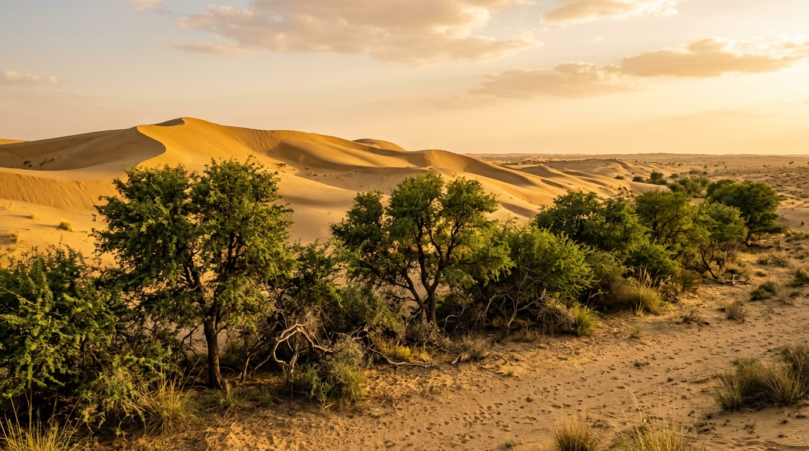
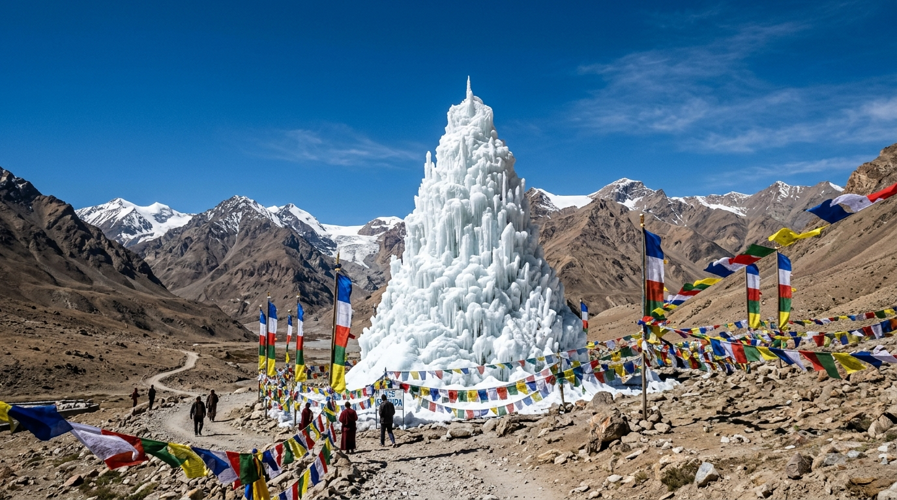
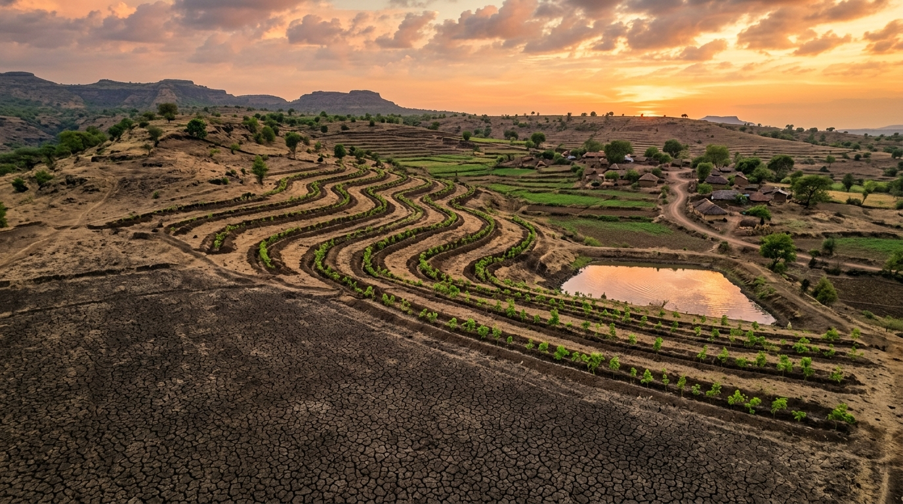

A geospatial and ecological investigation into how anthropogenic stress, shifting monsoon dynamics, and soil erosion are reshaping the subcontinent's landscapes—from the shifting sands of the Thar to the cryospheric cold deserts of Ladakh.
Explore multi-spectral geospatial data compiled from ISRO Space Applications Centre (SAC) Atlases. Toggle erosion layers to inspect how water runoff, wind scouring, salinity, and vegetative loss vary across bio-climatic zones.
Time-series telemetry compiled from ISRO Space Applications Centre (SAC) Atlases. Examine how degraded area trajectory, vegetative canopy (NDVI), and land surface temperature have evolved across key vulnerable regions.
According to the ISRO Space Applications Centre Desertification Atlas, land degradation in India is governed by four primary morphological mechanisms. Hover over the cards to inspect 3D physical models.
High-intensity monsoon downpours strip topsoil from deforested undulating slopes across the Shivalik foothills, Eastern Ghats, and Central Highlands. Unchecked runoff carves steep ravines, causing irreversible loss of topsoil nutrients.
In arid western Rajasthan, Gujarat, and southwest Haryana, dry convective summer gales lift loose sand particles, eroding arable seedbeds and burying transport corridors with shifting barchan dunes.
Unregulated grazing pressure, excessive fuelwood harvesting, and forest canopy thinning strip the natural vegetative mantle, exposing delicate humus to solar radiation, crusting, and micro-climate desiccation.
Canal flood irrigation in poorly drained flat plains leads to high water tables, bringing subterranean mineral salts to the root zone via capillary action, forming barren white alkaline crusts (Reh & Kallar).
Diurnal freeze-thaw cycles in high-altitude Trans-Himalayan valleys fracture rocks into loose scree gravel, while low relative humidity and intense UV radiation prevent natural organic soil formation.
Surface quarrying in mineral belts (Jharkhand, Odisha, Rajasthan Aravalli) generates vast infertile overburden dumps, while urban concrete expansion permanently seals fertile prime agricultural land.
Land degradation does not merely occur at the surface; it strips subterranean pedological structure. Contrast a biologically active organic profile with an eroded, hardpan-cemented desertified profile.
Shelterbelts and vegetative cover maintain active humus formation, deep root aeration, and high infiltration capacity.
Persistent wind shear, overgrazing, and solar desiccation blow away organic fines, leaving a sterile compacted floor.
Official geospatial inventory of districts facing the highest proportion of land degradation relative to their Total Geographical Area (TGA), cross-referenced with primary morphological vectors.
| Rank | District | State | Total Area (ha) | Degraded Area (ha) | % Degraded | Primary Degradation Vector | Status |
|---|---|---|---|---|---|---|---|
| 01 | Jaisalmer | Rajasthan | 3,840,100 ha | 3,548,252 ha | 92.40% | Shifting Barchan Dunes & Wind Abrasion | Hyper-Critical |
| 02 | Barmer | Rajasthan | 2,838,700 ha | 2,106,315 ha | 74.20% | Wind Scour & Saline Sodic Depressions | Critical |
| 03 | Palamu | Jharkhand | 871,500 ha | 623,122 ha | 71.50% | Open-Cast Coal Mining & Forest Canopy Loss | Severe |
| 04 | Leh & Kargil | Ladakh | 4,528,000 ha | 3,119,792 ha | 68.90% | Cryospheric Frost Shattering & Glacial Retreat | Alpine Stress |
| 05 | Jodhpur | Rajasthan | 2,285,000 ha | 1,398,420 ha | 61.20% | Dune Migration & Subsoil Caliche Hardpans | High |
| 06 | Kutch | Gujarat | 4,565,200 ha | 2,652,381 ha | 58.10% | Coastal Salinity Ingress & Rann Wind Stripping | High |
| 07 | Anantapur | Andhra Pradesh | 1,913,000 ha | 1,084,671 ha | 56.70% | Severe Sheet Wash & Deep Water-Table Collapse | Drought Hub |
| 08 | Solapur | Maharashtra | 1,489,500 ha | 734,323 ha | 49.30% | Sugarcane Over-Irrigation & Black Soil Cracking | Moderate-High |
| 09 | Bellary | Karnataka | 844,700 ha | 369,978 ha | 43.80% | Iron-Ore Mining Overburden & Rainshadow Drought | Moderate |
| 10 | Koraput | Odisha | 880,700 ha | 362,848 ha | 41.20% | Podu (Slash & Burn) & Torrential Sloped Runoff | Moderate |
Track key national milestones, from the baseline ISRO Space Applications Centre Atlases to international commitments at UNCCD COP14 and the 2030 Land Degradation Neutrality target.
Space Applications Centre (Ahmedabad) publishes the first standardized 1:500,000 national desertification atlas utilizing IRS-1C/1D LISS-III sensor data, establishing India's first baseline inventory of degraded lands.
MoEFCC launches comprehensive inter-sectoral programs emphasizing community-led micro-watersheds, Joint Forest Management (JFM), and sand dune stabilization along arid agrarian borders.
Second decadal assessment reveals desertification increased to 96.4 million hectares (29.32% of TGA). High-resolution AWiFS satellite sensors identify severe water erosion across peninsular plateaus.
Adoption of the 2030 Agenda for Sustainable Development. Target 15.3 commits nations to combat desertification, restore degraded land and soil, and strive to achieve a Land Degradation-Neutral world.
The comprehensive 3rd edition reveals that 97.85M ha (29.77% of TGA) is degraded. Western Rajasthan, Maharashtra, and Gujarat account for over 50% of national degradation.
India hosts the 14th Conference of Parties to UNCCD. The Prime Minister of India announces an ambitious upgrade in India's restoration commitment from 21 million to 26 million hectares by 2030.
Inauguration of a 1,400km long and 5km wide ecological green corridor extending from Porbandar in Gujarat to Panipat in Haryana, designed as an impenetrable green buffer halting Thar desertification eastward.
National benchmark to restore 26M hectares of degraded landscapes, sequester an additional 2.5–3 billion tonnes of CO2 equivalent, and achieve hydrological balance in climate-vulnerable agro-ecosystems.
Explore how three ecologically contrasting biomes—the Thar Subtropical Desert, the Ladakh Cold Desert, and the Deccan Plateau—experience degradation and engineer high-impact ecological remedies.

Severe wind erosion scours 18–35 tonnes of topsoil per hectare annually. High summer gale winds (40–60 km/h) migrate barchan dunes toward fertile agricultural basins in Haryana and Delhi.
Three-tier shelterbelt plantations along canal banks and micro-windbreaks. Deep-rooted indigenous Prosopis cineraria (Khejri) and Tecomella undulata anchor the sand mantle, while micro-catchments trap sparse monsoonal moisture.

Rainshadow precipitation (<100mm/year) and rapid glacial retreat leave high-altitude mountain soils parched. Spring planting season faces acute water deficits before natural glaciers melt in late June.
Artificial Conical Glaciers (Ice Stupas), pioneered by Sonam Wangchuk and HIAL. Unused winter stream water is piped downhill and sprayed vertically, freezing into 30m high ice towers that slowly melt from April to June.

Regur black cotton soils shrink and crack deeply in summer, then erode rapidly during erratic cloudbursts. Water-intensive sugarcane monoculture caused severe salinization and subsoil compaction across Marathwada.
Integrated Watershed Management Programme (IWMP) and continuous contour trenching (CCT) that harvest every drop of rain on ridge-to-valley slopes, recharging deep basalt aquifers.
Simulate large-scale agro-climatic interventions across India's vulnerable biomes. Calculate sapling densities, projected carbon capture, soil loss averted, and hydrological recharge to attain Land Degradation Neutrality (LDN).
Assume command of the National Eco-Restoration Authority. Allocate eco-credits, plant climate-resilient vegetative shields, combat sandstorms and severe heatwaves, and secure Land Degradation Neutrality before cycle 12!
Effective on Shifting Dunes & Scrub. Anchors dunes and halts wind scour.
Effective on Cracked Gullies. Traps topsoil runoff and boosts percolation.
Stores millions of liters for deep aquifer recharge and drought buffer.
Effective on Saline Crusts. Bio-extracts toxic minerals and softens hardpan.
Top Eco-Commanders registered across historical restoration simulations.
| Rank | Commander | Title | Score | Date |
|---|